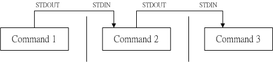

就如同前面所说的， bash 命令运行的时候有输出的数据会出现！
那么如果这群数据必需要经过几道手续之后才能得到我们所想要的格式，应该如何来配置？
这就牵涉到管线命令的问题了 (pipe) ，管线命令使用的是『 | 』这个界定符号！
另外，管线命令与『连续下达命令』是不一样的呦！
这点底下我们会再说明。底下我们先举一个例子来说明一下简单的管线命令。
假设我们想要知道 /etc/ 底下有多少文件，那么可以利用 ls /etc 来查阅，不过，
因为 /etc 底下的文件太多，导致一口气就将屏幕塞满了～不知道前面输出的内容是啥？此时，我们可以透过
less 命令的协助，利用：
[root@www ~]# ls -al /etc | less
|
如此一来，使用 ls 命令输出后的内容，就能够被 less 读取，并且利用 less
的功能，我们就能够前后翻动相关的信息了！很方便是吧？我们就来了解一下这个管线命令『 | 』的用途吧！
其实这个管线命令『 | 』仅能处理经由前面一个命令传来的正确信息，也就是 standard output
的信息，对于 stdandard error 并没有直接处理的能力。那么整体的管线命令可以使用下图表示：

图 6.1.1、 管线命令的处理示意图
在每个管线后面接的第一个数据必定是『命令』喔！而且这个命令必须要能够接受 standard input
的数据才行，这样的命令才可以是为『管线命令』，例如 less, more, head, tail 等都是可以接受 standard input
的管线命令啦。至于例如 ls, cp, mv 等就不是管线命令了！因为 ls, cp, mv 并不会接受来自 stdin 的数据。
也就是说，管线命令主要有两个比较需要注意的地方：
- 管线命令仅会处理 standard output，对于 standard error output 会予以忽略
- 管线命令必须要能够接受来自前一个命令的数据成为 standard input 继续处理才行。
多说无益，让我们来玩一些管线命令吧！底下的咚咚对系统管理非常有帮助喔！
 撷取命令： cut, grep
撷取命令： cut, grep
什么是撷取命令啊？说穿了，就是将一段数据经过分析后，取出我们所想要的。或者是经由分析关键词，取得我们所想要的那一行！
不过，要注意的是，一般来说，撷取信息通常是针对『一行一行』来分析的，
并不是整篇信息分析的喔～底下我们介绍两个很常用的信息撷取命令：
cut 不就是『切』吗？没错啦！这个命令可以将一段信息的某一段给他『切』出来～
处理的信息是以『行』为单位喔！底下我们就来谈一谈：
[root@www ~]# cut -d'分隔字符' -f fields <==用于有特定分隔字符
[root@www ~]# cut -c 字符区间 <==用于排列整齐的信息
选项与参数：
-d ：后面接分隔字符。与 -f 一起使用；
-f ：依据 -d 的分隔字符将一段信息分割成为数段，用 -f 取出第几段的意思；
-c ：以字符 (characters) 的单位取出固定字符区间；
范例一：将 PATH 变量取出，我要找出第五个路径。
[root@www ~]# echo $PATH
/bin:/usr/bin:/sbin:/usr/sbin:/usr/local/bin:/usr/X11R6/bin:/usr/games:
# 1 | 2 | 3 | 4 | 5 | 6 | 7
[root@www ~]# echo $PATH | cut -d ':' -f 5
# 如同上面的数字显示，我们是以『 : 』作为分隔，因此会出现 /usr/local/bin
# 那么如果想要列出第 3 与第 5 呢？，就是这样：
[root@www ~]# echo $PATH | cut -d ':' -f 3,5
范例二：将 export 输出的信息，取得第 12 字符以后的所有字符串
[root@www ~]# export
declare -x HISTSIZE="1000"
declare -x INPUTRC="/etc/inputrc"
declare -x KDEDIR="/usr"
declare -x LANG="zh_TW.big5"
.....(其他省略).....
# 注意看，每个数据都是排列整齐的输出！如果我们不想要『 declare -x 』时，
# 就得这么做：
[root@www ~]# export | cut -c 12-
HISTSIZE="1000"
INPUTRC="/etc/inputrc"
KDEDIR="/usr"
LANG="zh_TW.big5"
.....(其他省略).....
# 知道怎么回事了吧？用 -c 可以处理比较具有格式的输出数据！
# 我们还可以指定某个范围的值，例如第 12-20 的字符，就是 cut -c 12-20 等等！
范例三：用 last 将显示的登陆者的信息中，仅留下用户大名
[root@www ~]# last
root pts/1 192.168.201.101 Sat Feb 7 12:35 still logged in
root pts/1 192.168.201.101 Fri Feb 6 12:13 - 18:46 (06:33)
root pts/1 192.168.201.254 Thu Feb 5 22:37 - 23:53 (01:16)
# last 可以输出『账号/终端机/来源/日期时间』的数据，并且是排列整齐的
[root@www ~]# last | cut -d ' ' -f 1
# 由输出的结果我们可以发现第一个空白分隔的字段代表账号，所以使用如上命令：
# 但是因为 root pts/1 之间空格有好几个，并非仅有一个，所以，如果要找出
# pts/1 其实不能以 cut -d ' ' -f 1,2 喔！输出的结果会不是我们想要的。
|
cut 主要的用途在于将『同一行里面的数据进行分解！』最常使用在分析一些数据或文字数据的时候！
这是因为有时候我们会以某些字符当作分割的参数，然后来将数据加以切割，以取得我们所需要的数据。
鸟哥也很常使用这个功能呢！尤其是在分析 log 文件的时候！不过，cut
在处理多空格相连的数据时，可能会比较吃力一点。
刚刚的 cut 是将一行信息当中，取出某部分我们想要的，而 grep 则是分析一行信息，
若当中有我们所需要的信息，就将该行拿出来～简单的语法是这样的：
[root@www ~]# grep [-acinv] [--color=auto] '搜寻字符串' filename
选项与参数：
-a ：将 binary 文件以 text 文件的方式搜寻数据
-c ：计算找到 '搜寻字符串' 的次数
-i ：忽略大小写的不同，所以大小写视为相同
-n ：顺便输出行号
-v ：反向选择，亦即显示出没有 '搜寻字符串' 内容的那一行！
--color=auto ：可以将找到的关键词部分加上颜色的显示喔！
范例一：将 last 当中，有出现 root 的那一行就取出来；
[root@www ~]# last | grep 'root'
范例二：与范例一相反，只要没有 root 的就取出！
[root@www ~]# last | grep -v 'root'
范例三：在 last 的输出信息中，只要有 root 就取出，并且仅取第一栏
[root@www ~]# last | grep 'root' |cut -d ' ' -f1
# 在取出 root 之后，利用上个命令 cut 的处理，就能够仅取得第一栏啰！
范例四：取出 /etc/man.config 内含 MANPATH 的那几行
[root@www ~]# grep --color=auto 'MANPATH' /etc/man.config
....(前面省略)....
MANPATH_MAP /usr/X11R6/bin /usr/X11R6/man
MANPATH_MAP /usr/bin/X11 /usr/X11R6/man
MANPATH_MAP /usr/bin/mh /usr/share/man
# 神奇的是，如果加上 --color=auto 的选项，找到的关键词部分会用特殊颜色显示喔！
|
grep 是个很棒的命令喔！他支持的语法实在是太多了～用在正规表示法里头，
能够处理的数据实在是多的很～不过，我们这里先不谈正规表示法～下一章再来说明～
您先了解一下， grep 可以解析一行文字，取得关键词，若该行有存在关键词，就会整行列出来！
排序命令： sort, wc, uniq
很多时候，我们都会去计算一次数据里头的相同型态的数据总数，举例来说，
使用 last 可以查得这个月份有登陆主机者的身份。那么我可以针对每个使用者查出他们的总登陆次数吗？
此时就得要排序与计算之类的命令来辅助了！底下我们介绍几个好用的排序与统计命令喔！
sort 是很有趣的命令，他可以帮我们进行排序，而且可以依据不同的数据型态来排序喔！
例如数字与文字的排序就不一样。此外，排序的字符与语系的编码有关，因此，
如果您需要排序时，建议使用 LANG=C 来让语系统一，数据排序比较好一些。
[root@www ~]# sort [-fbMnrtuk] [file or stdin]
选项与参数：
-f ：忽略大小写的差异，例如 A 与 a 视为编码相同；
-b ：忽略最前面的空格符部分；
-M ：以月份的名字来排序，例如 JAN, DEC 等等的排序方法；
-n ：使用『纯数字』进行排序(默认是以文字型态来排序的)；
-r ：反向排序；
-u ：就是 uniq ，相同的数据中，仅出现一行代表；
-t ：分隔符，默认是用 [tab] 键来分隔；
-k ：以那个区间 (field) 来进行排序的意思
范例一：个人账号都记录在 /etc/passwd 下，请将账号进行排序。
[root@www ~]# cat /etc/passwd | sort
adm:x:3:4:adm:/var/adm:/sbin/nologin
apache:x:48:48:Apache:/var/www:/sbin/nologin
bin:x:1:1:bin:/bin:/sbin/nologin
daemon:x:2:2:daemon:/sbin:/sbin/nologin
# 鸟哥省略很多的输出～由上面的数据看起来， sort 是默认『以第一个』数据来排序，
# 而且默认是以『文字』型态来排序的喔！所以由 a 开始排到最后啰！
范例二：/etc/passwd 内容是以 : 来分隔的，我想以第三栏来排序，该如何？
[root@www ~]# cat /etc/passwd | sort -t ':' -k 3
root:x:0:0:root:/root:/bin/bash
uucp:x:10:14:uucp:/var/spool/uucp:/sbin/nologin
operator:x:11:0:operator:/root:/sbin/nologin
bin:x:1:1:bin:/bin:/sbin/nologin
games:x:12:100:games:/usr/games:/sbin/nologin
# 看到特殊字体的输出部分了吧？怎么会这样排列啊？呵呵！没错啦～
# 如果是以文字型态来排序的话，原本就会是这样，想要使用数字排序：
# cat /etc/passwd | sort -t ':' -k 3 -n
# 这样才行啊！用那个 -n 来告知 sort 以数字来排序啊！
范例三：利用 last ，将输出的数据仅取账号，并加以排序
[root@www ~]# last | cut -d ' ' -f1 | sort
|
sort 同样是很常用的命令呢！因为我们常常需要比较一些信息啦！
举个上面的第二个例子来说好了！今天假设你有很多的账号，而且你想要知道最大的使用者
ID 目前到哪一号了！呵呵！使用 sort 一下子就可以知道答案咯！当然其使用还不止此啦！
有空的话不妨玩一玩！
如果我排序完成了，想要将重复的数据仅列出一个显示，可以怎么做呢？
[root@www ~]# uniq [-ic]
选项与参数：
-i ：忽略大小写字符的不同；
-c ：进行计数
范例一：使用 last 将账号列出，仅取出账号栏，进行排序后仅取出一位；
[root@www ~]# last | cut -d ' ' -f1 | sort | uniq
范例二：承上题，如果我还想要知道每个人的登陆总次数呢？
[root@www ~]# last | cut -d ' ' -f1 | sort | uniq -c
1
12 reboot
41 root
1 wtmp
# 从上面的结果可以发现 reboot 有 12 次， root 登陆则有 41 次！
# wtmp 与第一行的空白都是 last 的默认字符，那两个可以忽略的！
|
这个命令用来将『重复的行删除掉只显示一个』，举个例子来说，
你要知道这个月份登陆你主机的用户有谁，而不在乎他的登陆次数，那么就使用上面的范例，
(1)先将所有的数据列出；(2)再将人名独立出来；(3)经过排序；(4)只显示一个！
由于这个命令是在将重复的东西减少，所以当然需要『配合排序过的文件』来处理啰！
如果我想要知道 /etc/man.config 这个文件里面有多少字？多少行？多少字符的话，
可以怎么做呢？其实可以利用 wc 这个命令来达成喔！他可以帮我们计算输出的信息的整体数据！
[root@www ~]# wc [-lwm]
选项与参数：
-l ：仅列出行；
-w ：仅列出多少字(英文单字)；
-m ：多少字符；
范例一：那个 /etc/man.config 里面到底有多少相关字、行、字符数？
[root@www ~]# cat /etc/man.config | wc
141 722 4617
# 输出的三个数字中，分别代表： 『行、字数、字符数』
范例二：我知道使用 last 可以输出登陆者，但是 last 最后两行并非账号内容，
那么请问，我该如何以一行命令串取得这个月份登陆系统的总人次？
[root@www ~]# last | grep [a-zA-Z] | grep -v 'wtmp' | wc -l
# 由于 last 会输出空白行与 wtmp 字样在最底下两行，因此，我利用
# grep 取出非空白行，以及去除 wtmp 那一行，在计算行数，就能够了解啰！
|
wc 也可以当作命令？这可不是上洗手间的 WC
呢！这是相当有用的计算文件内容的一个工具组喔！举个例子来说，
当你要知道目前你的账号文件中有多少个账号时，就使用这个方法：『
cat /etc/passwd | wc -l 』啦！因为 /etc/passwd 里头一行代表一个使用者呀！
所以知道行数就晓得有多少的账号在里头了！而如果要计算一个文件里头有多少个字符时，就使用
wc -m 这个选项吧！
双向重导向： tee
想个简单的东西，我们由前一节知道 > 会将数据流整个传送给文件或装置，因此我们除非去读取该文件或装置，
否则就无法继续利用这个数据流。万一我想要将这个数据流的处理过程中将某段信息存下来，应该怎么做？
利用 tee 就可以啰～我们可以这样简单的看一下：

图 6.3.1、tee 的工作流程示意图
tee 会同时将数据流分送到文件去与屏幕 (screen)；而输出到屏幕的，其实就是 stdout
，可以让下个命令继续处理喔！
[root@www ~]# tee [-a] file
选项与参数：
-a ：以累加 (append) 的方式，将数据加入 file 当中！
[root@www ~]# last | tee last.list | cut -d " " -f1
# 这个范例可以让我们将 last 的输出存一份到 last.list 文件中；
[root@www ~]# ls -l /home | tee ~/homefile | more
# 这个范例则是将 ls 的数据存一份到 ~/homefile ，同时屏幕也有输出信息！
[root@www ~]# ls -l / | tee -a ~/homefile | more
# 要注意！ tee 后接的文件会被覆盖，若加上 -a 这个选项则能将信息累加。
|
tee 可以让 standard output 转存一份到文件内并将同样的数据继续送到屏幕去处理！
这样除了可以让我们同时分析一份数据并记录下来之外，还可以作为处理一份数据的中间缓存盘记录之用！
tee 这家伙在很多选择/填充的认证考试中很容易考呢！
字符转换命令：
tr, col, join, paste, expand
我们在 vim 程序编辑器当中，提到过 DOS
断行字符与 Unix 断行字符的不同，并且可以使用 dos2unix 与 unix2dos
来完成转换。好了，那么思考一下，是否还有其他常用的字符替代？
举例来说，要将大写改成小写，或者是将数据中的 [tab] 按键转成空格键？还有，如何将两篇信息整合成一篇？
底下我们就来介绍一下这些字符转换命令在管线当中的使用方法：
tr 可以用来删除一段信息当中的文字，或者是进行文字信息的替换！
[root@www ~]# tr [-ds] SET1 ...
选项与参数：
-d ：删除信息当中的 SET1 这个字符串；
-s ：取代掉重复的字符！
范例一：将 last 输出的信息中，所有的小写变成大写字符：
[root@www ~]# last | tr '[a-z]' '[A-Z]'
# 事实上，没有加上单引号也是可以运行的，如：『 last | tr [a-z] [A-Z] 』
范例二：将 /etc/passwd 输出的信息中，将冒号 (:) 删除
[root@www ~]# cat /etc/passwd | tr -d ':'
范例三：将 /etc/passwd 转存成 dos 断行到 /root/passwd 中，再将 ^M 符号删除
[root@www ~]# cp /etc/passwd /root/passwd && unix2dos /root/passwd
[root@www ~]# file /etc/passwd /root/passwd
/etc/passwd: ASCII text
/root/passwd: ASCII text, with CRLF line terminators <==就是 DOS 断行
[root@www ~]# cat /root/passwd | tr -d '\r' > /root/passwd.linux
# 那个 \r 指的是 DOS 的断行字符，关于更多的字符，请参考 man tr
[root@www ~]# ll /etc/passwd /root/passwd*
-rw-r--r-- 1 root root 1986 Feb 6 17:55 /etc/passwd
-rw-r--r-- 1 root root 2030 Feb 7 15:55 /root/passwd
-rw-r--r-- 1 root root 1986 Feb 7 15:57 /root/passwd.linux
# 处理过后，发现文件大小与原本的 /etc/passwd 就一致了！
|
其实这个命令也可以写在『正规表示法』里头！因为他也是由正规表示法的方式来取代数据的！
以上面的例子来说，使用 [] 可以配置一串字呢！也常常用来取代文件中的怪异符号！
例如上面第三个例子当中，可以去除 DOS 文件留下来的 ^M 这个断行的符号！这东西相当的有用！相信处理 Linux &
Windows 系统中的人们最麻烦的一件事就是这个事情啦！亦即是 DOS 底下会自动的在每行行尾加入
^M 这个断行符号！这个时候我们可以使用这个 tr 来将 ^M 去除！ ^M 可以使用
\r 来代替之！
[root@www ~]# col [-xb]
选项与参数：
-x ：将 tab 键转换成对等的空格键
-b ：在文字内有反斜杠 (/) 时，仅保留反斜杠最后接的那个字符
范例一：利用 cat -A 显示出所有特殊按键，最后以 col 将 [tab] 转成空白
[root@www ~]# cat -A /etc/man.config <==此时会看到很多 ^I 的符号，那就是 tab
[root@www ~]# cat /etc/man.config | col -x | cat -A | more
# 嘿嘿！如此一来， [tab] 按键会被取代成为空格键，输出就美观多了！
范例二：将 col 的 man page 转存成为 /root/col.man 的纯文本档
[root@www ~]# man col > /root/col.man
[root@www ~]# vi /root/col.man
COL(1) BSD General Commands Manual COL(1)
N^HNA^HAM^HME^HE
c^Hco^Hol^Hl - filter reverse line feeds from input
S^HSY^HYN^HNO^HOP^HPS^HSI^HIS^HS
c^Hco^Hol^Hl [-^H-b^Hbf^Hfp^Hpx^Hx] [-^H-l^Hl _^Hn_^Hu_^Hm]
# 你没看错！由于 man page 内有些特殊按钮会用来作为类似特殊按键与颜色显示，
# 所以这个文件内就会出现如上所示的一堆怪异字符(有 ^ 的)
[root@www ~]# man col | col -b > /root/col.man
|
虽然 col 有他特殊的用途，不过，很多时候，他可以用来简单的处理将 [tab] 按键取代成为空格键！
例如上面的例子当中，如果使用 cat -A 则 [tab] 会以 ^I 来表示。
但经过 col -x 的处理，则会将 [tab] 取代成为对等的空格键！此外， col 经常被利用于将 man page
转存为纯文本文件以方便查阅的功能！如上述的范例二！
join 看字面上的意义 (加入/参加) 就可以知道，他是在处理两个文件之间的数据，
而且，主要是在处理『两个文件当中，有 "相同数据"
的那一行，才将他加在一起』的意思。我们利用底下的简单例子来说明：
[root@www ~]# join [-ti12] file1 file2
选项与参数：
-t ：join 默认以空格符分隔数据，并且比对『第一个字段』的数据，
如果两个文件相同，则将两笔数据联成一行，且第一个字段放在第一个！
-i ：忽略大小写的差异；
-1 ：这个是数字的 1 ，代表『第一个文件要用那个字段来分析』的意思；
-2 ：代表『第二个文件要用那个字段来分析』的意思。
范例一：用 root 的身份，将 /etc/passwd 与 /etc/shadow 相关数据整合成一栏
[root@www ~]# head -n 3 /etc/passwd /etc/shadow
==> /etc/passwd <==
root:x:0:0:root:/root:/bin/bash
bin:x:1:1:bin:/bin:/sbin/nologin
daemon:x:2:2:daemon:/sbin:/sbin/nologin
==> /etc/shadow <==
root:$1$/3AQpE5e$y9A/D0bh6rElAs:14120:0:99999:7:::
bin:*:14126:0:99999:7:::
daemon:*:14126:0:99999:7:::
# 由输出的数据可以发现这两个文件的最左边字段都是账号！且以 : 分隔
[root@www ~]# join -t ':' /etc/passwd /etc/shadow
root:x:0:0:root:/root:/bin/bash:$1$/3AQpE5e$y9A/D0bh6rElAs:14120:0:99999:7:::
bin:x:1:1:bin:/bin:/sbin/nologin:*:14126:0:99999:7:::
daemon:x:2:2:daemon:/sbin:/sbin/nologin:*:14126:0:99999:7:::
# 透过上面这个动作，我们可以将两个文件第一字段相同者整合成一行！
# 第二个文件的相同字段并不会显示(因为已经在第一行了嘛！)
范例二：我们知道 /etc/passwd 第四个字段是 GID ，那个 GID 记录在
/etc/group 当中的第三个字段，请问如何将两个文件整合？
[root@www ~]# head -n 3 /etc/passwd /etc/group
==> /etc/passwd <==
root:x:0:0:root:/root:/bin/bash
bin:x:1:1:bin:/bin:/sbin/nologin
daemon:x:2:2:daemon:/sbin:/sbin/nologin
==> /etc/group <==
root:x:0:root
bin:x:1:root,bin,daemon
daemon:x:2:root,bin,daemon
# 从上面可以看到，确实有相同的部分喔！赶紧来整合一下！
[root@www ~]# join -t ':' -1 4 /etc/passwd -2 3 /etc/group
0:root:x:0:root:/root:/bin/bash:root:x:root
1:bin:x:1:bin:/bin:/sbin/nologin:bin:x:root,bin,daemon
2:daemon:x:2:daemon:/sbin:/sbin/nologin:daemon:x:root,bin,daemon
# 同样的，相同的字段部分被移动到最前面了！所以第二个文件的内容就没再显示。
# 请读者们配合上述显示两个文件的实际内容来比对！
|
这个 join 在处理两个相关的数据文件时，就真的是很有帮助的啦！
例如上面的案例当中，我的 /etc/passwd, /etc/shadow, /etc/group 都是有相关性的，
其中 /etc/passwd, /etc/shadow 以账号为相关性，至于 /etc/passwd, /etc/group
则以所谓的 GID (账号的数字定义) 来作为他的相关性。根据这个相关性，
我们可以将有关系的数据放置在一起！这在处理数据可是相当有帮助的！
但是上面的例子有点难，希望您可以静下心好好的看一看原因喔！
此外，需要特别注意的是，在使用 join
之前，你所需要处理的文件应该要事先经过排序 (sort) 处理！
否则有些比对的项目会被略过呢！特别注意了！
这个 paste 就要比 join 简单多了！相对于 join 必须要比对两个文件的数据相关性，
paste 就直接『将两行贴在一起，且中间以 [tab] 键隔开』而已！简单的使用方法：
[root@www ~]# paste [-d] file1 file2
选项与参数：
-d ：后面可以接分隔字符。默认是以 [tab] 来分隔的！
- ：如果 file 部分写成 - ，表示来自 standard input 的数据的意思。
范例一：将 /etc/passwd 与 /etc/shadow 同一行贴在一起
[root@www ~]# paste /etc/passwd /etc/shadow
bin:x:1:1:bin:/bin:/sbin/nologin bin:*:14126:0:99999:7:::
daemon:x:2:2:daemon:/sbin:/sbin/nologin daemon:*:14126:0:99999:7:::
adm:x:3:4:adm:/var/adm:/sbin/nologin adm:*:14126:0:99999:7:::
# 注意喔！同一行中间是以 [tab] 按键隔开的！
范例二：先将 /etc/group 读出(用 cat)，然后与范例一贴上一起！且仅取出前三行
[root@www ~]# cat /etc/group|paste /etc/passwd /etc/shadow -|head -n 3
# 这个例子的重点在那个 - 的使用！那玩意儿常常代表 stdin 喔！
|
这玩意儿就是在将 [tab] 按键转成空格键啦～可以这样玩：
[root@www ~]# expand [-t] file
选项与参数：
-t ：后面可以接数字。一般来说，一个 tab 按键可以用 8 个空格键取代。
我们也可以自行定义一个 [tab] 按键代表多少个字符呢！
范例一：将 /etc/man.config 内行首为 MANPATH 的字样就取出；仅取前三行；
[root@www ~]# grep '^MANPATH' /etc/man.config | head -n 3
MANPATH /usr/man
MANPATH /usr/share/man
MANPATH /usr/local/man
# 行首的代表标志为 ^ ，这个我们留待下节介绍！先有概念即可！
范例二：承上，如果我想要将所有的符号都列出来？(用 cat)
[root@www ~]# grep '^MANPATH' /etc/man.config | head -n 3 |cat -A
MANPATH^I/usr/man$
MANPATH^I/usr/share/man$
MANPATH^I/usr/local/man$
# 发现差别了吗？没错～ [tab] 按键可以被 cat -A 显示成为 ^I
范例三：承上，我将 [tab] 按键配置成 6 个字符的话？
[root@www ~]# grep '^MANPATH' /etc/man.config | head -n 3 | \
> expand -t 6 - | cat -A
MANPATH /usr/man$
MANPATH /usr/share/man$
MANPATH /usr/local/man$
123456123456123456.....
# 仔细看一下上面的数字说明，因为我是以 6 个字符来代表一个 [tab] 的长度，所以，
# MAN... 到 /usr 之间会隔 12 (两个 [tab]) 个字符喔！如果 tab 改成 9 的话，
# 情况就又不同了！这里也不好理解～您可以多配置几个数字来查阅就晓得！
|
expand 也是挺好玩的～他会自动将 [tab] 转成空格键～所以，以上面的例子来说，
使用 cat -A 就会查不到 ^I 的字符啰～此外，因为 [tab] 最大的功能就是格式排列整齐！
我们转成空格键后，这个空格键也会依据我们自己的定义来添加大小～
所以，并不是一个 ^I 就会换成 8 个空白喔！这个地方要特别注意的哩！
此外，您也可以参考一下 unexpand 这个将空白转成 [tab] 的命令功能啊！ ^_^
分割命令： split
如果你有文件太大，导致一些携带式装置无法复制的问题，嘿嘿！找 split 就对了！
他可以帮你将一个大文件，依据文件大小或行数来分割，就可以将大文件分割成为小文件了！
快速又有效啊！真不错～
[root@www ~]# split [-bl] file PREFIX
选项与参数：
-b ：后面可接欲分割成的文件大小，可加单位，例如 b, k, m 等；
-l ：以行数来进行分割。
PREFIX ：代表前导符的意思，可作为分割文件的前导文字。
范例一：我的 /etc/termcap 有七百多K，若想要分成 300K 一个文件时？
[root@www ~]# cd /tmp; split -b 300k /etc/termcap termcap
[root@www tmp]# ll -k termcap*
-rw-r--r-- 1 root root 300 Feb 7 16:39 termcapaa
-rw-r--r-- 1 root root 300 Feb 7 16:39 termcapab
-rw-r--r-- 1 root root 189 Feb 7 16:39 termcapac
# 那个档名可以随意取的啦！我们只要写上前导文字，小文件就会以
# xxxaa, xxxab, xxxac 等方式来创建小文件的！
范例二：如何将上面的三个小文件合成一个文件，档名为 termcapback
[root@www tmp]# cat termcap* >> termcapback
# 很简单吧？就用数据流重导向就好啦！简单！
范例三：使用 ls -al / 输出的信息中，每十行记录成一个文件
[root@www tmp]# ls -al / | split -l 10 - lsroot
[root@www tmp]# wc -l lsroot*
10 lsrootaa
10 lsrootab
6 lsrootac
26 total
# 重点在那个 - 啦！一般来说，如果需要 stdout/stdin 时，但偏偏又没有文件，
# 有的只是 - 时，那么那个 - 就会被当成 stdin 或 stdout ～
|
在 Windows 操作系统下，你要将文件分割需要如何作？伤脑筋吧！在 Linux
底下就简单的多了！你要将文件分割的话，那么就使用 -b size
来将一个分割的文件限制其大小，如果是行数的话，那么就使用
-l line 来分割！好用的很！如此一来，你就可以轻易的将你的文件分割成软盘 (floppy)
的大小，方便你 copy 啰！
参数代换： xargs
xargs 是在做什么的呢？就以字面上的意义来看， x 是加减乘除的乘号，args 则是 arguments (参数)
的意思，所以说，这个玩意儿就是在产生某个命令的参数的意思！
xargs 可以读入 stdin 的数据，并且以空格符或断行字符作为分辨，将 stdin 的数据分隔成为 arguments 。
因为是以空格符作为分隔，所以，如果有一些档名或者是其他意义的名词内含有空格符的时候，
xargs 可能就会误判了～他的用法其实也还满简单的！就来看一看先！
[root@www ~]# xargs [-0epn] command
选项与参数：
-0 ：如果输入的 stdin 含有特殊字符，例如 `, \, 空格键等等字符时，这个 -0 参数
可以将他还原成一般字符。这个参数可以用于特殊状态喔！
-e ：这个是 EOF (end of file) 的意思。后面可以接一个字符串，当 xargs 分析到
这个字符串时，就会停止继续工作！
-p ：在运行每个命令的 argument 时，都会询问使用者的意思；
-n ：后面接次数，每次 command 命令运行时，要使用几个参数的意思。看范例三。
当 xargs 后面没有接任何的命令时，默认是以 echo 来进行输出喔！
范例一：将 /etc/passwd 内的第一栏取出，仅取三行，使用 finger 这个命令将每个
账号内容秀出来
[root@www ~]# cut -d':' -f1 /etc/passwd |head -n 3| xargs finger
Login: root Name: root
Directory: /root Shell: /bin/bash
Never logged in.
No mail.
No Plan.
......底下省略.....
# 由 finger account 可以取得该账号的相关说明内容，例如上面的输出就是 finger root
# 后的结果。在这个例子当中，我们利用 cut 取出账号名称，用 head 取出三个账号，
# 最后则是由 xargs 将三个账号的名称变成 finger 后面需要的参数！
范例二：同上，但是每次运行 finger 时，都要询问使用者是否动作？
[root@www ~]# cut -d':' -f1 /etc/passwd |head -n 3| xargs -p finger
finger root bin daemon ?...y
.....(底下省略)....
# 呵呵！这个 -p 的选项可以让用户的使用过程中，被询问到每个命令是否运行！
范例三：将所有的 /etc/passwd 内的账号都以 finger 查阅，但一次仅查阅五个账号
[root@www ~]# cut -d':' -f1 /etc/passwd | xargs -p -n 5 finger
finger root bin daemon adm lp ?...y
.....(中间省略)....
finger uucp operator games gopher ftp ?...y
.....(底下省略)....
# 在这里鸟哥使用了 -p 这个参数来让您对于 -n 更有概念。一般来说，某些命令后面
# 可以接的 arguments 是有限制的，不能无限制的累加，此时，我们可以利用 -n
# 来帮助我们将参数分成数个部分，每个部分分别再以命令来运行！这样就 OK 啦！^_^
范例四：同上，但是当分析到 lp 就结束这串命令？
[root@www ~]# cut -d':' -f1 /etc/passwd | xargs -p -e'lp' finger
finger root bin daemon adm ?...
# 仔细与上面的案例做比较。也同时注意，那个 -e'lp' 是连在一起的，中间没有空格键。
# 上个例子当中，第五个参数是 lp 啊，那么我们下达 -e'lp' 后，则分析到 lp
# 这个字符串时，后面的其他 stdin 的内容就会被 xargs 舍弃掉了！
|
其实，在 man xargs 里面就有三四个小范例，您可以自行参考一下内容。
此外， xargs 真的是很好用的一个玩意儿！您真的需要好好的参详参详！会使用 xargs 的原因是，
很多命令其实并不支持管线命令，因此我们可以透过 xargs 来提供该命令引用 standard
input 之用！举例来说，我们使用如下的范例来说明：
范例五：找出 /sbin 底下具有特殊权限的档名，并使用 ls -l 列出详细属性
[root@www ~]# find /sbin -perm +7000 | ls -l
# 结果竟然仅有列出 root 所在目录下的文件！这不是我们要的！
# 因为 ll (ls) 并不是管线命令的原因啊！
[root@www ~]# find /sbin -perm +7000 | xargs ls -l
-rwsr-xr-x 1 root root 70420 May 25 2008 /sbin/mount.nfs
-rwsr-xr-x 1 root root 70424 May 25 2008 /sbin/mount.nfs4
-rwxr-sr-x 1 root root 5920 Jun 15 2008 /sbin/netreport
....(底下省略)....
|
关于减号 - 的用途
管线命令在 bash 的连续的处理程序中是相当重要的！另外，在 log file 的分析当中也是相当重要的一环，
所以请特别留意！另外，在管线命令当中，常常会使用到前一个命令的 stdout 作为这次的 stdin ，
某些命令需要用到文件名 (例如 tar) 来进行处理时，该 stdin 与 stdout 可以利用减号 "-" 来替代，
举例来说：
[root@www ~]# tar -cvf - /home | tar -xvf -
|
上面这个例子是说：『我将 /home 里面的文件给他打包，但打包的数据不是纪录到文件，而是传送到 stdout；
经过管线后，将 tar -cvf - /home 传送给后面的 tar -xvf - 』。后面的这个 - 则是取用前一个命令的 stdout，
因此，我们就不需要使用 file 了！这是很常见的例子喔！注意注意！